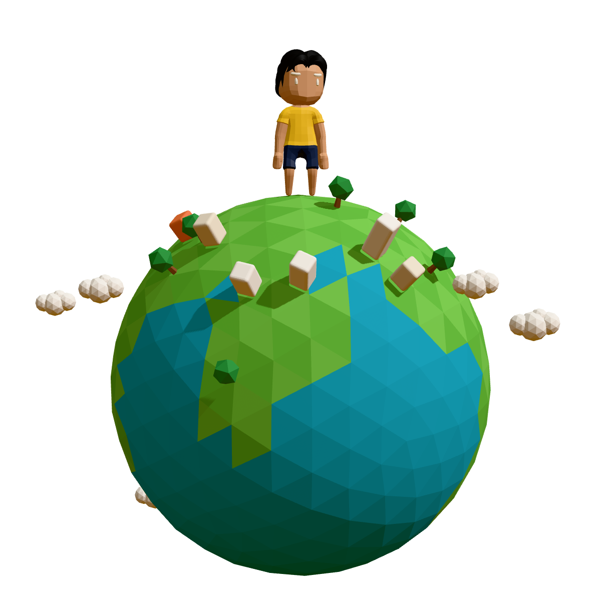
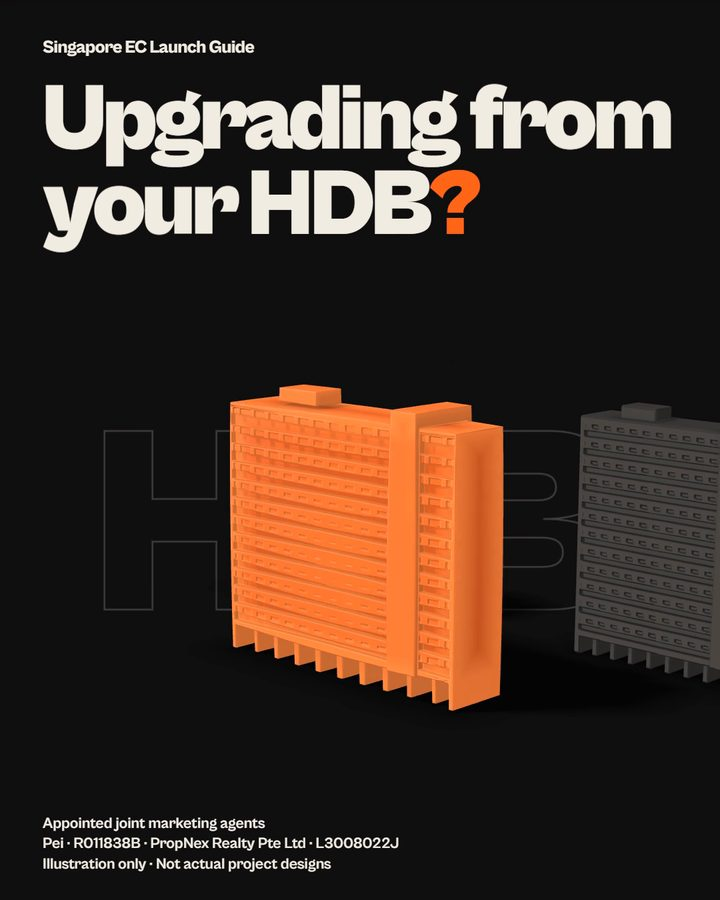

30+ Meta ad campaigns
800,000+ views in month one
I run Meta ads and make the video ads. The views are from tinyworld, my own 3D reel channel.
I’m Tedd, a Year 2 Digital Media & Communications student at Singapore Polytechnic, looking for a digital marketing internship.


Meta ads I planned, made and tested.
-
5 OctRan first
A guide to five upcoming launches.
4:5 feed
-
24 OctTested beside it
Opens on one question: “Upgrading from your HDB?”
4:5 feed
With the launches about to open, I tested a second ad beside the first in the same campaign.
- 30+
- campaigns for a real estate business, 2020 to 2026
-
Shows the walk to the MRT on a real map.
9:16 Reels and Stories
-
Leads with one fact about the area.
9:16 Reels and Stories
Press an ad to watch it with sound.
I plan who to reach, write the copy, build the lead form and make the video.
For the ads I also use Higgsfield for AI video shots, Blender for 3D and CapCut for the edit.
What testing taught me
Check the phone number.
A form with no checks brought taps, not people. Now every form checks the number by text.
Change one thing, then wait.
I once changed a campaign four times in twelve days. Now it is one change, then two weeks alone.
Lead with proof nobody else has.
Rival ads all used the same few layouts, so mine start with something only this business can say.
My lead form and my change log
Repeats the ad’s promise
Sorts who can buy, and when
Home size
Which launch
Singapore citizen?
When are you buying?
Phone number checked by text
A screen to check before sending
A button to chat
No income question.
| Date | What changed |
|---|---|
| 5 Oct | First video ad, new form, legal line added |
| 16 Oct | Relaunched, changing what the campaign aims for |
| 21 Oct | Location, form and ad text, all on one day (my mistake: three changes at once) |
| 21 Oct | Audience widened to all of Singapore |
| 22 Oct | Form linked to a sheet and a phone alert |
| 24 Oct | Two videos side by side |
| 27 Oct | Sheet link found broken, reconnected |
| 28 Oct | Age range widened, then campaign paused |
| 18 Nov | New campaign: one ad set, three ads, hands off |
tinyworld, my own “What if...?” channel.
- 800,000+
- views in the first month See @tinyworld.sim on Instagram
-
What if you had to fight a silverback gorilla?
-
What if the world lost gravity?
-
What if the Earth stopped spinning?
-
What if a typhoon hit Singapore?
Every reel is a 3D simulation made with code and AI tools, on TikTok, Instagram and YouTube.
- Every reel opens on its question in the first second.
I built the AI pipeline that makes tinyworld.
Research
Every number is checked against two sources.
Script
One AI drafts it. A second AI edits it.
Build
AI writes the code that builds and renders each 3D scene.
Check
A different AI reviews every reel before it is posted.
I’m Tedd, 18, Year 2 at Singapore Polytechnic.
Outside school I have worked event crew at an F1 race, at Gardens by the Bay and during the Kusu Island pilgrimage season. Long days, live crowds.
I ran a half marathon this year and I’m training for my first full marathon this December.
- Meta Ads Manager
- CapCut
- Photoshop
- Illustrator
- Figma
Let’s talk.
I’m looking for a digital marketing internship.
Press to copy the address.